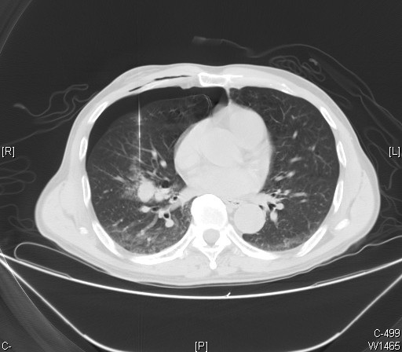

Ficha del catálogo
Hamartoma pulmonar
- Sistema
- Respiratorio
- Modalidad
- TC
- Región
- Tórax
- Dificultad
- Intermedio
Lesión benigna formada por una mezcla desordenada de tejidos propios del pulmón, con cartílago, grasa, tejido conjuntivo y epitelio. Es el tumor benigno pulmonar más frecuente y suele descubrirse de forma casual en un estudio de imagen. Reconocerlo evita procedimientos invasivos innecesarios en un nódulo que no tiene riesgo de malignizar.
Técnica
Tomografía de tórax con cortes finos sin contraste, midiendo la atenuación en el interior del nódulo para buscar componente graso.
Qué observar
- Nódulo de bordes lisos y contorno redondeado o algo lobulado
- Grasa en el interior, con valores de atenuación negativos
- Calcificación de morfología irregular comparada con palomitas de maíz
- Tamaño habitualmente pequeño y localización periférica
- Crecimiento muy lento o ausente en los controles
- Ausencia de espiculación, de retracción pleural y de adenopatías
Hallazgos
Nódulo bien delimitado con focos de grasa y calcificación gruesa en su interior, estable en el tiempo.
Perlas
La combinación de grasa y calcificación en un nódulo pequeño y liso permite dar el diagnóstico con seguridad. La grasa se debe medir en cortes finos, ya que el promedio de volumen en cortes gruesos puede enmascararla.
Diagnóstico diferencial
- Granuloma calcificado
- Calcificación densa y homogénea sin componente graso.
- Metástasis
- Suelen ser múltiples y sin grasa, con crecimiento apreciable.
- Carcinoide típico
- Realce intenso y localización con frecuencia endobronquial.
Simuladores
- Promedio de volumen con grasa vecina en lesiones periféricas
- Ruido de imagen que simula valores negativos
- Nódulo con necrosis interpretado como grasa
Por modalidad
- RX
- Nódulo bien definido, a veces con calcificación visible
- TC
- Permite identificar grasa y calcificación y establecer el diagnóstico
Protocolo
Cortes finos sin contraste con mediciones en regiones de interés pequeñas dentro del nódulo, evitando incluir el borde.
Clasificación
Errores frecuentes
- Medir la grasa en cortes gruesos y no detectarla
- Biopsiar un nódulo con criterios claros de benignidad
- Confundir la calcificación gruesa del hamartoma con la del granuloma

hamartoma nodulo benigno grasa intralesional calcificacion en palomitas hallazgo casual